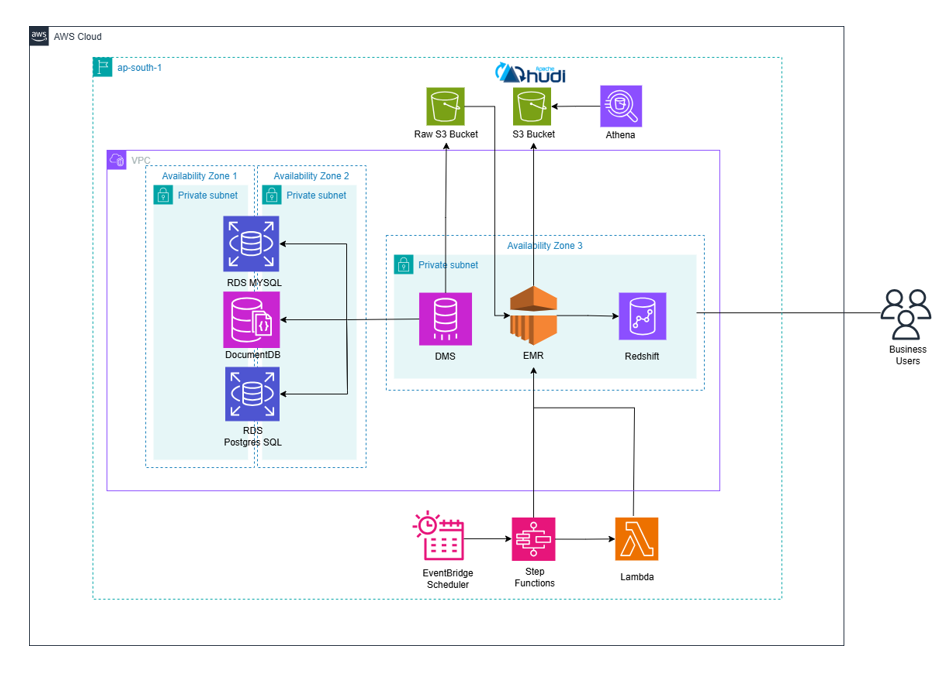
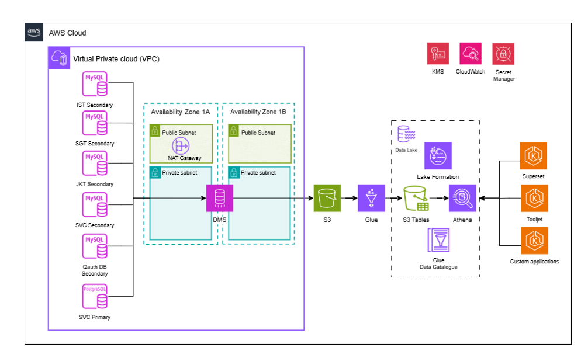
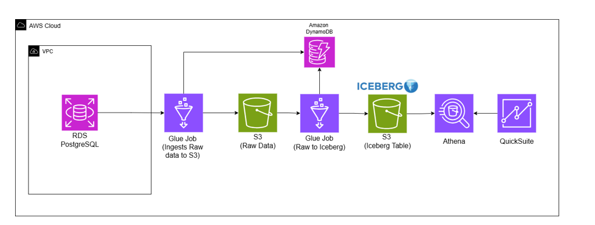
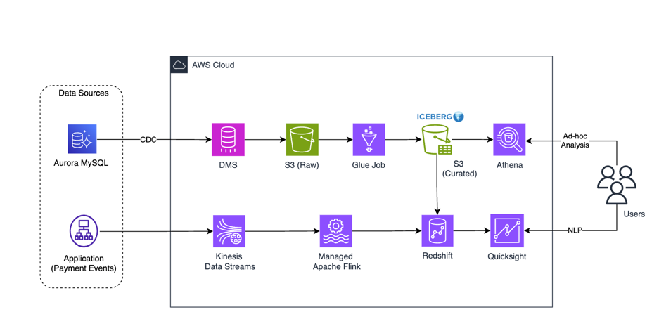
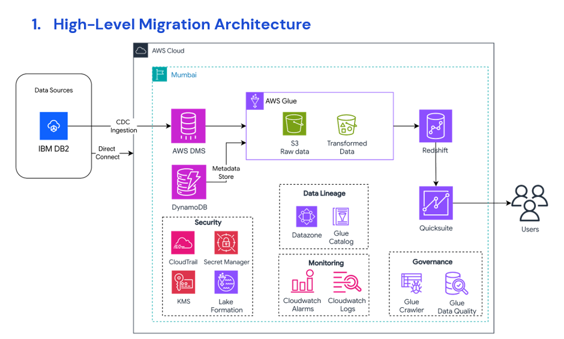
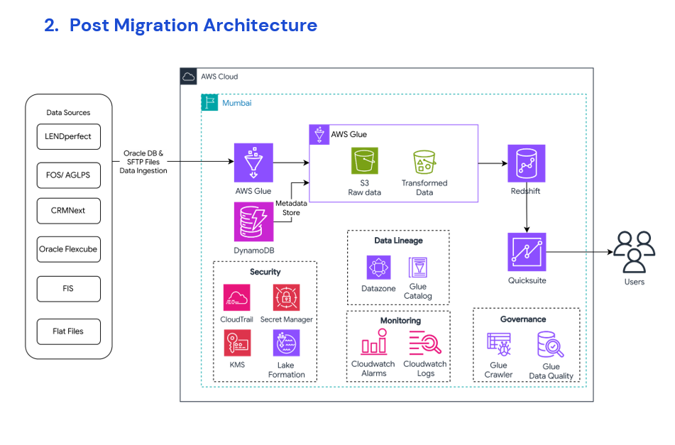
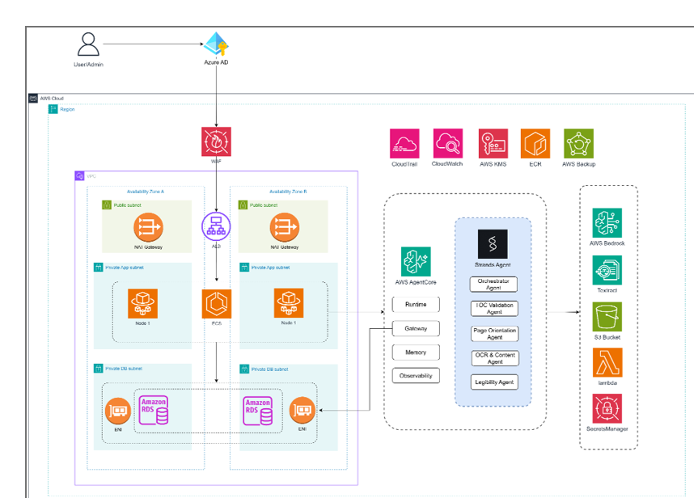
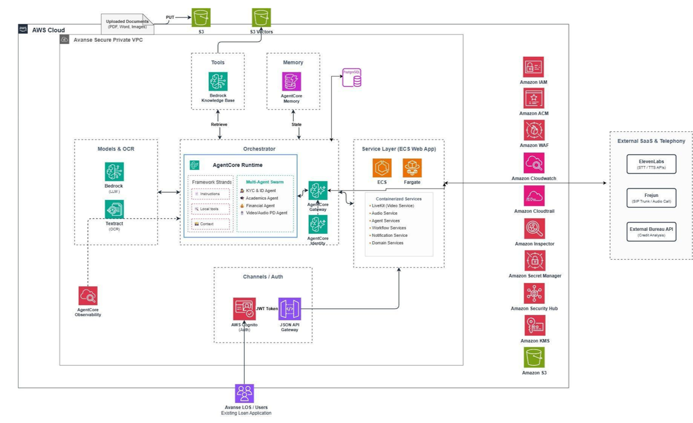
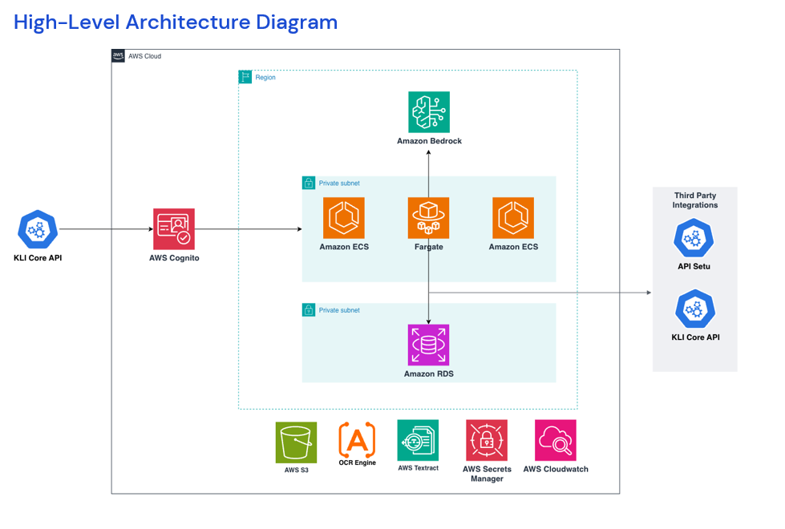
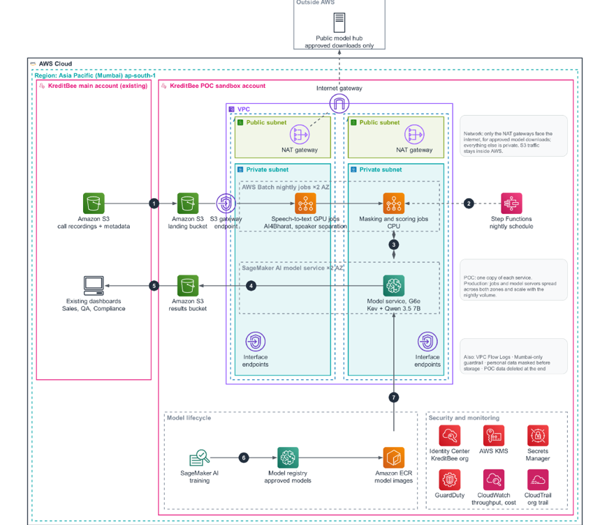

10 diagrams from Sample arch diagrams.zip: 6 Data, 4 GenAI. No Cloud-only sample supplied. Inspected individually; advisory patterns, not certified designs. Previous SOW-document imports are superseded.
data | deployment | unspecified | Image + guidance

Flow: Operational databases -> change capture -> raw storage -> transformation -> warehouse and queryable lake; scheduler controls transformation.
Reuse: Dark cloud frame and teal dashed region have corner badges; purple VPC contains blue dashed AZs and cyan private subnets. Raw/curated stores and orchestration are regional siblings. Query consumers sit outside cloud.
Cautions: Database icons straddle AZ boundaries: assign each instance unambiguously. Do not copy three AZs, database choices or region. Distinguish CDC data direction from replication control calls.
Source: Data/Screenshot 2026-10-14 120040.png
SHA-256: 2a6df6ebb5b1e5ca3c4ec38afa2b3a1f41ff8a0487850d10081ee8c9d85081c5data | mixed | unspecified | Image + guidance

Flow: Operational databases -> CDC -> raw object storage -> transformation -> table lake -> query -> BI applications; catalogue and governance support access.
Reuse: Ingestion VPC left uses dashed AZs, pale green public and cyan private shading with badges. Regional lakehouse uses a separate dashed functional group; controls form a top rail.
Cautions: DMS straddles AZs and container apps lack hosting in the image. Resolve deployment mode and subnet membership. Do not copy counts, NAT or geography. Governance grouping is not a VPC.
Source: Data/Screenshot 2026-10-14 120253.png
SHA-256: 7f5f748b44c48219cecd42e2750b51f967bfbb31167506ab02ed2cb2d494d6fbdata | logical | unspecified | Image + guidance

Flow: Relational source -> ingestion -> raw object store -> table transformation -> curated lake -> query/BI; metadata store tracks ingestion state.
Reuse: Single left-to-right pipeline inside dark cloud frame. Source in its own VPC; metadata branch above processing; managed storage/query outside VPC.
Cautions: Not a full deployment topology. Glue networking depends on connectivity. Iceberg is a table format, not a compute boundary. Do not copy source database choice unless selected.
Source: Data/Screenshot 2026-10-14 120522.png
SHA-256: e914cc92db48f01f9196945ddc7daaa0d7b81dfd374bbeb88da756e26fd0076bdata | logical | unspecified | Image + guidance

Flow: Database CDC -> raw storage -> curated lake -> query; events -> stream -> stream processor -> warehouse -> BI. Curated lake feeds warehouse only when in scope.
Reuse: Two horizontal lanes converge on consumers. External sources in dashed rounded box left; dark cloud frame surrounds services; users right. Shared stores drawn once.
Cautions: Logical view omits networking. Resolve DMS, streaming and warehouse hosting separately. Do not import payment-domain requirements or assume every shared-store link is needed.
Source: Data/Screenshot 2026-10-14 120618.png
SHA-256: 77a5faa2aeb522c47c53ef4f345752ff70e5a782554e565395cf75993ca08c82data | logical | migration | Image + guidance

Flow: External database -> CDC -> raw lake -> transformation -> curated data -> warehouse -> BI; metadata, catalogue, quality and monitoring support the path.
Reuse: Dark cloud and teal dashed region with badges; main path above dashed security, lineage, monitoring and governance groups. Sources left and users right outside cloud.
Cautions: Purple Glue processing box is functional, not a VPC. Do not inherit Direct Connect, region, compatibility or all controls. Verify chosen DMS and warehouse deployment.
Source: Data/Screenshot 2026-10-14 120720.png
SHA-256: 193b689892b231f84579af8b55567dad4fd79fe9323f52c7090aab9c1d3a8652data | logical | steady_state | Image + guidance

Flow: Enterprise database and file feeds -> ingestion -> raw storage -> transformation -> curated lake -> warehouse -> BI; ingestion metadata maintained separately.
Reuse: External source list left; horizontal processing/storage above dashed governance groups inside teal region and dark cloud frame. Controls separate from data traffic.
Cautions: Post-migration operating pattern, not CDC migration. Do not copy application names, region or assume all feeds share a connection. Functional Glue block must not become a subnet.
Source: Data/Screenshot 2026-10-14 120831.png
SHA-256: d3b78d4d166762410b1c67ed25352cc50a0846505a61191a8778c3b293df1a8agenai | mixed | unspecified | Image + guidance

Flow: Authenticated application -> orchestration -> OCR/model/document tools; application uses private data store. Specialist checks are logical agent roles, not necessarily separate deployments.
Reuse: External identity above cloud; teal dashed region, purple VPC, dashed AZs, green public and cyan app/data subnets. Regional tool/runtime modules beside VPC; controls in top rail.
Cautions: Authentication is not serial traffic through WAF; associate WAF with supported ingress. ALB spans selected subnets, not VPCs. Do not copy duplicate Node 1 labels or two AZs; resolve AgentCore networking independently.
Source: GenAI/Screenshot 2026-10-14 121132.png
SHA-256: 77fa017b9c0f6b96bb332e1c65ae2955ddc2d3cf503706b4bd595abbdcc99bdbgenai | mixed | unspecified | Guidance only: source containment errors

Flow: Existing application -> authenticated ingress -> integration service -> orchestrator with OCR, model, retrieval and memory; external verification tools remain outside AWS.
Reuse: Dashed functional modules around central orchestrator; external SaaS right and separate security rail. Reuse module separation, not blanket VPC containment.
Cautions: Text-only: image incorrectly encloses Bedrock, Textract, Cognito and API Gateway in VPC and S3 straddles cloud border. Do not imitate placement. Resolve AgentCore mode and service-owned versus customer VPC resources; no copied agents, customer names or vendors.
Source: GenAI/Screenshot 2026-10-14 121242.png
SHA-256: 13b62879271e8b2b49894e8f8cc7d7143410e2dacb64ce1539d621f4df569691genai | mixed | unspecified | Image + guidance

Flow: Existing claims API -> authenticated application -> extraction/model validation -> data store and external verification; results return to existing system.
Reuse: Central cyan private app and database tiers; inference above; external integrations right; shared tools below. Dark cloud and teal dashed region with badges.
Cautions: Private subnets lack VPC parent in image: add proper VPC containment. Do not turn repeated ECS/Fargate symbols into three serial apps. Move regional tools inside region. No copied client integrations.
Source: GenAI/Screenshot 2026-10-14 121525.png
SHA-256: cc45dbedaf12a31dfbca6b8c509c61a46441ee1a188356a4b37bb4bf43493978genai | deployment | poc | Image + guidance

Flow: Customer recordings -> landing store -> transcription -> masking/scoring -> model inference -> results -> existing dashboards. Training, approval and deployment form a separate lifecycle.
Reuse: Cloud, region, account, VPC and shaded public/private boxes with badges; numbered data path; dashed job/download links. Lifecycle and security below runtime; external model hub above cloud.
Cautions: Use cloud/account/region/VPC/AZ/subnet nesting rather than source region/account order. Dashed worker groups are not AZs. Resolve POC versus production redundancy; no copied model names, GPU size, retention or region. Registry and image publishing are distinct; label control versus data links.
Source: GenAI/Screenshot 2026-10-14 121618.png
SHA-256: bfd8f36cb94270c4b109af17835de83150dbb61d6c3ed00ee745f4aebb247026